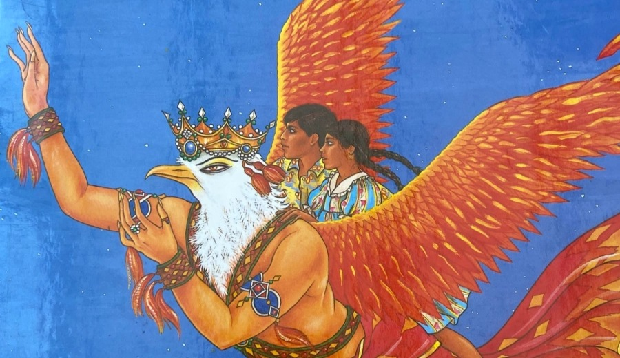

Awoken by the light of a magical moon, Vinita and Deepak embark on an amazing adventure with magnificent gods and heroes from Indian mythology. Illustrated by Anita Chowdry. Available in English, Bengali, Gujarati, Urdu, Hindi and Panjabi. It is accompanied by beautiful songs in English.
Featured by world-famous dancer Akram Khan on his website, reading it to his own daughter, Sayuri, as part of his audio series “An Ancient Observer” (sound design by Pete Thomas).

“Do try one of these sweets,” said Ganesh, “they are very good. Besides, you will need strength, for tonight neither of you will sleep!”
“I am Shiv, and I have many names and moods.”
“I am Garud, King of the Birds. I have been sent to collect you.”
“I'm Hanuman, King of the Monkeys! What a thrill! You don't know who Ram is? Sit down my friends and listen carefully.”
“Have you heard about a boy? A very special boy, a very charming boy, a very naughty boy. Krishna. Come and see… Ma has gone to collect water and has left a pot full of fresh butter hanging from the rafters.”
The next time you gaze into the night sky, take a closer look at the moon. If you are very lucky it may appear round and blue. This blue moon is very precious, for on nights when it shines, impossible things happen!
One night, not long ago, a beam from this blue moon shone into a room where two children lay sleeping. It settled on the picture of Ganesha, the elephant-headed god.
Now Ganesha was very ticklish, and at once the corners of his mouth creased into a smile. The smile grew into a giggle which shook his whole body into life. He felt so happy that he stepped out of the picture with his companion, a tiny mouse, and began to sing:
Who is welcome in the house Sitting on a little mouse? Ganesha, Ganesha!
— from Journey With The Gods